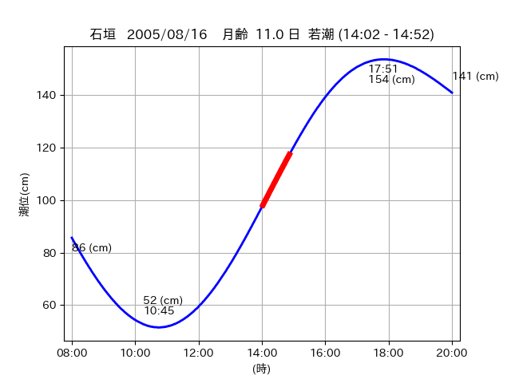

<!DOCTYPE html>
<html>
<head>
    
    <meta http-equiv="content-type" content="text/html; charset=UTF-8" />
    
        <script>
            L_NO_TOUCH = false;
            L_DISABLE_3D = false;
        </script>
    
    <style>html, body {width: 100%;height: 100%;margin: 0;padding: 0;}</style>
    <style>#map {position:absolute;top:0;bottom:0;right:0;left:0;}</style>
    <script src="https://cdn.jsdelivr.net/npm/leaflet@1.9.3/dist/leaflet.js"></script>
    <script src="https://code.jquery.com/jquery-3.7.1.min.js"></script>
    <script src="https://cdn.jsdelivr.net/npm/bootstrap@5.2.2/dist/js/bootstrap.bundle.min.js"></script>
    <script src="https://cdnjs.cloudflare.com/ajax/libs/Leaflet.awesome-markers/2.0.2/leaflet.awesome-markers.js"></script>
    <link rel="stylesheet" href="https://cdn.jsdelivr.net/npm/leaflet@1.9.3/dist/leaflet.css"/>
    <link rel="stylesheet" href="https://cdn.jsdelivr.net/npm/bootstrap@5.2.2/dist/css/bootstrap.min.css"/>
    <link rel="stylesheet" href="https://netdna.bootstrapcdn.com/bootstrap/3.0.0/css/bootstrap-glyphicons.css"/>
    <link rel="stylesheet" href="https://cdn.jsdelivr.net/npm/@fortawesome/fontawesome-free@6.2.0/css/all.min.css"/>
    <link rel="stylesheet" href="https://cdnjs.cloudflare.com/ajax/libs/Leaflet.awesome-markers/2.0.2/leaflet.awesome-markers.css"/>
    <link rel="stylesheet" href="https://cdn.jsdelivr.net/gh/python-visualization/folium/folium/templates/leaflet.awesome.rotate.min.css"/>
    
            <meta name="viewport" content="width=device-width,
                initial-scale=1.0, maximum-scale=1.0, user-scalable=no" />
            <style>
                #map_03169be1b7431ca40e0c705641e2f344 {
                    position: relative;
                    width: 2048.0px;
                    height: 1600.0px;
                    left: 0.0%;
                    top: 0.0%;
                }
                .leaflet-container { font-size: 1rem; }
            </style>
        
</head>
<body>
    
    
            <div class="folium-map" id="map_03169be1b7431ca40e0c705641e2f344" ></div>
        
</body>
<script>
    
    
            var map_03169be1b7431ca40e0c705641e2f344 = L.map(
                "map_03169be1b7431ca40e0c705641e2f344",
                {
                    center: [24.061, 123.813],
                    crs: L.CRS.EPSG3857,
                    ...{
  "zoom": 12,
  "zoomControl": true,
  "preferCanvas": false,
}

                }
            );

            

        
    
            var tile_layer_6a9f687d9291969058633b3a1f8d11d1 = L.tileLayer(
                "https://cyberjapandata.gsi.go.jp/xyz/seamlessphoto/{z}/{x}/{y}.jpg",
                {
  "minZoom": 0,
  "maxZoom": 18,
  "maxNativeZoom": 18,
  "noWrap": false,
  "attribution": "\u5730\u7406\u9662\u5730\u56f3",
  "subdomains": "abc",
  "detectRetina": false,
  "tms": false,
  "opacity": 1,
}

            );
        
    
            tile_layer_6a9f687d9291969058633b3a1f8d11d1.addTo(map_03169be1b7431ca40e0c705641e2f344);
        
    
            var marker_5fdba4a59789edc2aa9d563450cd3549 = L.marker(
                [24.0729, 123.7916],
                {
}
            ).addTo(map_03169be1b7431ca40e0c705641e2f344);
        
    
            var icon_4cea9c98d41f604ab6fb342fa2a83b4a = L.AwesomeMarkers.icon(
                {
  "markerColor": "blue",
  "iconColor": "white",
  "icon": "info-sign",
  "prefix": "glyphicon",
  "extraClasses": "fa-rotate-0",
}
            );
        
    
        var popup_e4e94646207566a41fe5ed87e79d4716 = L.popup({
  "maxWidth": "100%",
});

        
            
                var html_722ef2cbe369b37f5bddcdae86cca700 = $(`<div id="html_722ef2cbe369b37f5bddcdae86cca700" style="width: 100.0%; height: 100.0%;"><table><tr><td></td></tr><tr><td><center>20050816 No.1 </center></table></td></tr></table</div>`)[0];
                popup_e4e94646207566a41fe5ed87e79d4716.setContent(html_722ef2cbe369b37f5bddcdae86cca700);
            
        

        marker_5fdba4a59789edc2aa9d563450cd3549.bindPopup(popup_e4e94646207566a41fe5ed87e79d4716)
        ;

        
    
    
                marker_5fdba4a59789edc2aa9d563450cd3549.setIcon(icon_4cea9c98d41f604ab6fb342fa2a83b4a);
            
    
            var marker_62846bede8817ed2877653ef494f6f68 = L.marker(
                [24.0469, 123.7986],
                {
}
            ).addTo(map_03169be1b7431ca40e0c705641e2f344);
        
    
            var icon_520dd5de63d203cb9d20a96cc6231d82 = L.AwesomeMarkers.icon(
                {
  "markerColor": "orange",
  "iconColor": "white",
  "icon": "info-sign",
  "prefix": "glyphicon",
  "extraClasses": "fa-rotate-0",
}
            );
        
    
        var popup_ada6def2633ff8b778574b7c26bad771 = L.popup({
  "maxWidth": "100%",
});

        
            
                var html_d4ddd8e90afb31fe26c3fce641b45388 = $(`<div id="html_d4ddd8e90afb31fe26c3fce641b45388" style="width: 100.0%; height: 100.0%;"><table><tr><td></td></tr><tr><td><center>20050816 No.2 </center></table></td></tr></table</div>`)[0];
                popup_ada6def2633ff8b778574b7c26bad771.setContent(html_d4ddd8e90afb31fe26c3fce641b45388);
            
        

        marker_62846bede8817ed2877653ef494f6f68.bindPopup(popup_ada6def2633ff8b778574b7c26bad771)
        ;

        
    
    
                marker_62846bede8817ed2877653ef494f6f68.setIcon(icon_520dd5de63d203cb9d20a96cc6231d82);
            
    
            var poly_line_979a0f5f0f143f97d24135a2049cf8b6 = L.polyline(
                [[24.0469, 123.7986], [24.0499, 123.8073]],
                {"bubblingMouseEvents": true, "color": "#FF00FF", "dashArray": null, "dashOffset": null, "fill": false, "fillColor": "#FF00FF", "fillOpacity": 0.2, "fillRule": "evenodd", "lineCap": "round", "lineJoin": "round", "noClip": false, "opacity": 1.0, "smoothFactor": 1.0, "stroke": true, "weight": 3}
            ).addTo(map_03169be1b7431ca40e0c705641e2f344);
        
    
            var marker_418088c90b78d1fa3239c66e262791bc = L.marker(
                [24.0559, 123.8107],
                {
}
            ).addTo(map_03169be1b7431ca40e0c705641e2f344);
        
    
            var icon_a558a1961b2a0a8e057116bc3d333c99 = L.AwesomeMarkers.icon(
                {
  "markerColor": "orange",
  "iconColor": "white",
  "icon": "info-sign",
  "prefix": "glyphicon",
  "extraClasses": "fa-rotate-0",
}
            );
        
    
        var popup_9aa3554f6fde626b22d485a8a491bbef = L.popup({
  "maxWidth": "100%",
});

        
            
                var html_b26645ee4877ec061c8bda2f45f8f0e7 = $(`<div id="html_b26645ee4877ec061c8bda2f45f8f0e7" style="width: 100.0%; height: 100.0%;"><table><tr><td></td></tr><tr><td><center>20050816 No.3 </center></table></td></tr></table</div>`)[0];
                popup_9aa3554f6fde626b22d485a8a491bbef.setContent(html_b26645ee4877ec061c8bda2f45f8f0e7);
            
        

        marker_418088c90b78d1fa3239c66e262791bc.bindPopup(popup_9aa3554f6fde626b22d485a8a491bbef)
        ;

        
    
    
                marker_418088c90b78d1fa3239c66e262791bc.setIcon(icon_a558a1961b2a0a8e057116bc3d333c99);
            
    
            var poly_line_08149c441a89e8e12ce9bd05ac293498 = L.polyline(
                [[24.0559, 123.8107], [24.0653, 123.8151]],
                {"bubblingMouseEvents": true, "color": "#FF00FF", "dashArray": null, "dashOffset": null, "fill": false, "fillColor": "#FF00FF", "fillOpacity": 0.2, "fillRule": "evenodd", "lineCap": "round", "lineJoin": "round", "noClip": false, "opacity": 1.0, "smoothFactor": 1.0, "stroke": true, "weight": 3}
            ).addTo(map_03169be1b7431ca40e0c705641e2f344);
        
</script>
</html>